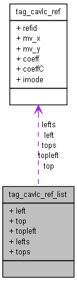

Main Page
Namespaces
Classes
Files
Class List
Class Hierarchy
Class Members
tag_cavlc_ref_list Struct Reference
#include <
vlcPred.h
>
Collaboration diagram for tag_cavlc_ref_list:

[
legend
]
List of all members.
Public Attributes
cavlc_ref
*
left
cavlc_ref
*
top
cavlc_ref
topleft
cavlc_ref
lefts
[4]
cavlc_ref
tops
[5]
Member Data Documentation
cavlc_ref
*
tag_cavlc_ref_list::left
cavlc_ref
tag_cavlc_ref_list::lefts
[4]
cavlc_ref
*
tag_cavlc_ref_list::top
cavlc_ref
tag_cavlc_ref_list::topleft
cavlc_ref
tag_cavlc_ref_list::tops
[5]
The documentation for this struct was generated from the following file:
MVCCommonLib/Codec/
vlcPred.h
Generated on Thu Jun 10 20:58:50 2010 for MVC by
1.6.3
 1.6.3
1.6.3